This exam covers ecosystems, chemistry and coordination and control. (Ecosystems is no longer a separate topic in the course, but the questions are still good revision.) The original paper has two questions numbered 11 in Section B; here the later questions are numbered 12–14.
Data page: periodic table.

Section A: Multiple choice (30 marks)
Ecosystems
A ______ is all the living and non-living things in a particular area that interact with one another.
Which is an example of an abiotic component affecting a community?
In the carbon cycle, the human body returns carbon to the atmosphere through:
Which of the following do plant and animal cells have in common?
Which statement best describes animals that are heterotrophs?
One immediate cause of a decrease in the rate of photosynthesis is a reduction in the availability of:
Which statement accurately describes the relationship between photosynthesis and cellular respiration?
In the food chain grass → grasshopper → frog → snake → hawk, the snakes receive 5 kJ of energy. How much energy is available at the producer level?
Only about 10% of the energy passes on at each step. Grass → grasshopper → frog → snake is three steps, so the grass has 5 × 10 × 10 × 10 = 5000 kJ.
Questions 9 and 10 refer to this food web.
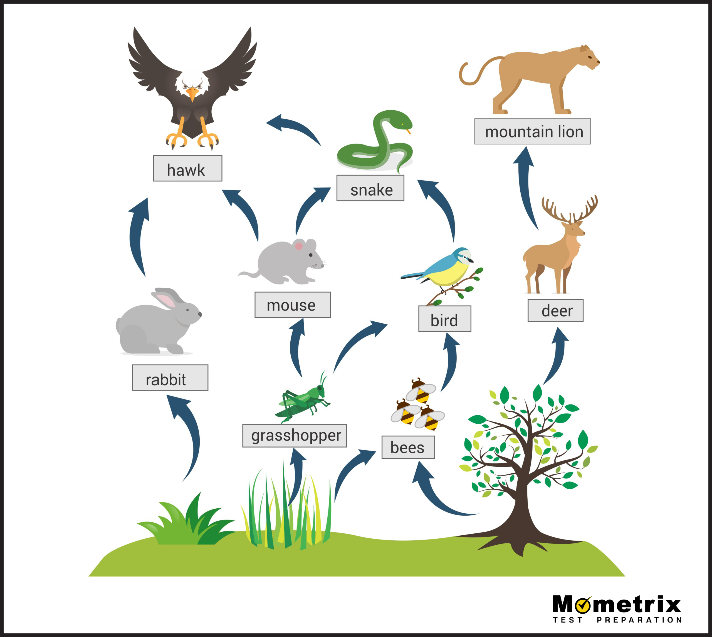
The longest food chain in this food web consists of:
If the bees were killed off by pesticides, there would most likely be an immediate decrease in:
Chemistry
The mass number is best defined as:
The table describes three unnamed particles in atoms: particle X (charge 0, mass 1, in the nucleus); particle Y (charge −1, mass 1/1836, orbiting the nucleus); particle Z (charge +1, mass 1, in the nucleus). Which names each particle correctly (X; Y; Z)?
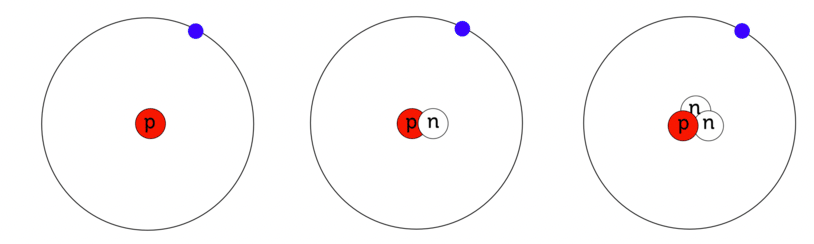
Hydrogen has three types of atom, shown above. These are examples of:
The symbol 3115P shows that this form of phosphorus has:
Which of the following is likely to be in Group 8 (the noble gases)?
Questions 16–18 refer to this partial periodic table. (The letters are not the real chemical symbols.)
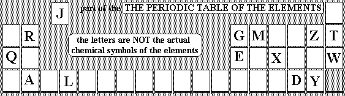
Which elements are both alkaline earth metals?
Which elements are in period 3?
Which elements are non-metals?
What is the electronic structure of a magnesium atom (shell 1, shell 2, shell 3)?
The elements of which group would produce a −1 ion?
Coordination and control
What is a disadvantage of an organism being unicellular rather than multicellular?
Metabolic requirements of life include:
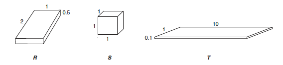
The three shapes have the same volume (dimensions in cm). Which arranges them in order of increasing SA:V?
Surface areas: S = 6 cm2, R = 7 cm2, T = 22.2 cm2, all for 1 cm3.
Small molecules like oxygen move through the cell membrane by diffusion. What is a good definition of diffusion?
Which is a true comparison of the nervous and endocrine systems?
Which gland and hormone are correctly matched?
Which type of neuron transmits an impulse from the body to the central nervous system?
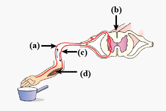
A student touches a hot saucepan and pulls their hand away before noticing the pain. Which correctly labels the reflex arc ((a); (b); (c); (d))?
Questions 29 and 30 refer to this picture.
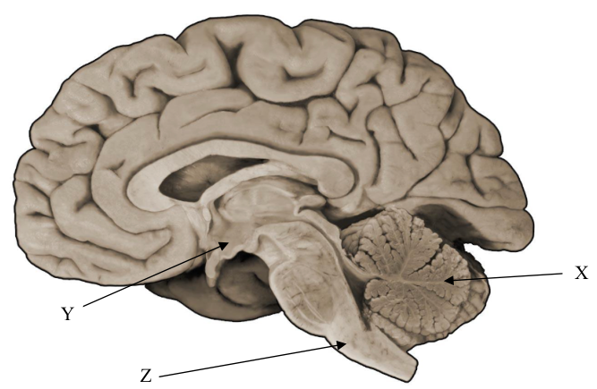
Which correctly names X, Y and Z?
What is a function of the part labelled X?
Section B: Short answer (60 marks)
Ecosystems: Question 1
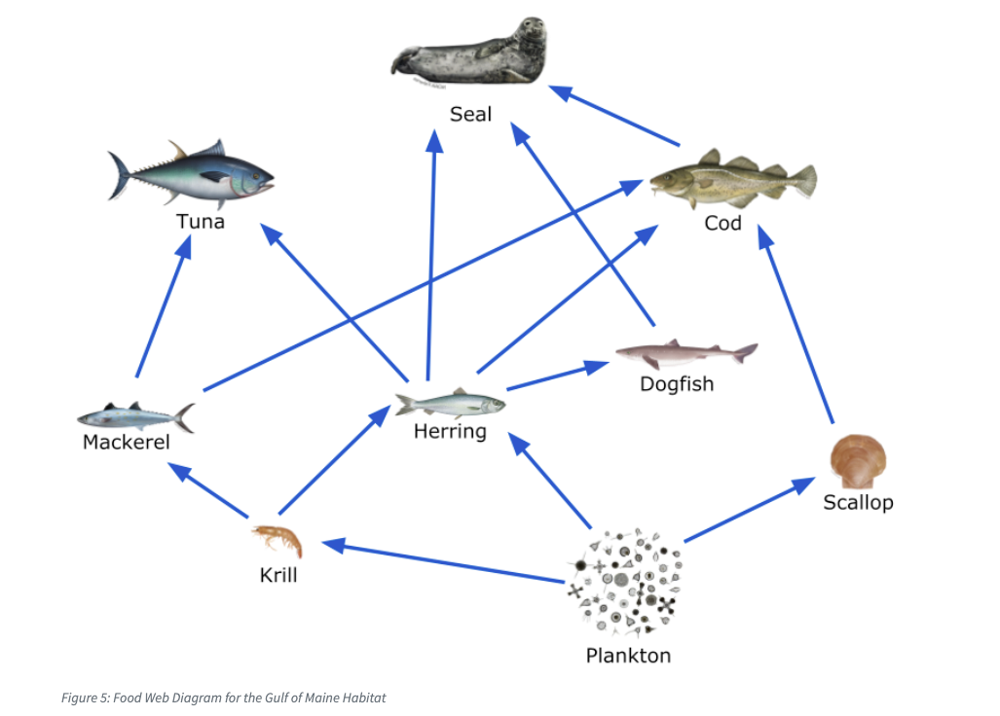
Name (i) a tertiary consumer and (ii) a producer in this food web.
(i) Seal, tuna or cod. (ii) Plankton.
Write a food chain involving 4 organisms.
For example: plankton → herring → dogfish → seal.
Why do the arrows point towards the consumer, rather than towards what is being eaten?
The arrows show the direction of energy transfer: energy passes from what is eaten to the consumer.
Producers make organic molecules such as glucose, which consumers then break down for energy. What distinguishes aerobic and anaerobic respiration, and why do these two pathways exist?
Two comparative statements, e.g.:
- Aerobic respiration needs oxygen, whereas anaerobic respiration happens without oxygen (1 mark).
- Aerobic respiration occurs in the mitochondria, whereas anaerobic respiration occurs in the cytosol (or: aerobic releases much more energy) (1 mark).
Two pathways exist because energy still has to be released when oxygen is not available, which is why anaerobic respiration exists (1 mark).
What trophic level(s) does the cod occupy in this food web?
Secondary consumer and tertiary consumer.
What could be an effect on the food web if people hunted and killed a large number of seals? Explain.
Herring, dogfish and cod would increase in number, as fewer predators are eating them (1 mark). This would then cause a decrease in krill, plankton and scallops, as more organisms are eating them (1 mark).
Question 2
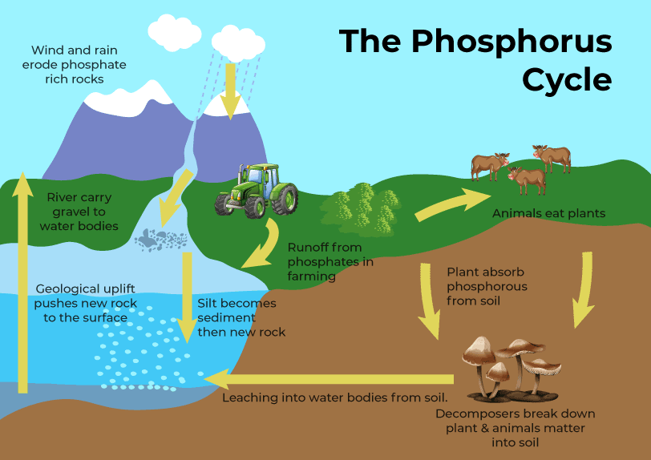
Phosphorus is an essential nutrient. Give two examples of where phosphorus is found in living organisms.
Any two: ATP, DNA, RNA (also cell membranes, bones and teeth).
How is phosphorus stored in the natural environment?
As phosphate in rocks, and dissolved in water.
The phosphorus cycle is very slow compared with other biogeochemical cycles. Why?
Phosphorus has to be eroded (weathered) from rocks and leach into soil and water before plants can absorb and use it, which takes a long time. (It has no gas phase in the atmosphere.)
Question 3
The two products of photosynthesis are .
A student investigated the effect of light intensity on the rate of photosynthesis. Pondweed in sodium hydrogencarbonate solution was placed 5 cm from an LED light source, and the number of bubbles produced in 30 seconds was counted. This was repeated at different distances.
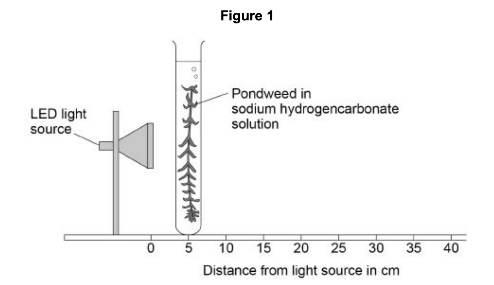
The LED light source does not get hot. Why is this important?
Temperature also affects the rate of photosynthesis (it would increase if the temperature rose), so it must be controlled so that only light intensity changes.
| Distance from light source (cm) | Bubbles in 30 seconds |
|---|---|
| 5 | 40 |
| 10 | 13 |
| 15 | 5 |
| 20 | 2 |
| 25 | 1 |
| 30 | 0 |
Give one conclusion that can be made from these results.
As the light source moves further from the pondweed, the number of bubbles decreases, showing that the rate of photosynthesis decreases as light intensity decreases.
Write the chemical equation for photosynthesis.
6CO2 + 6H2O → C6H12O6 + 6O2 (with light and chlorophyll written over the arrow)
Chemistry: Question 4
On paper, draw the structure of a sodium atom, 2311Na, including protons, neutrons, electrons and electron shells. Describe it, then compare.
A nucleus containing 11 protons and 12 neutrons, surrounded by three shells holding 2, 8 and 1 electrons. A key must be included (the protons and neutrons can be drawn individually or labelled as numbers).
- Electronic configuration of the sodium atom:
- Number of valence electrons:
- When sodium becomes an ion, its charge is .
Question 5
Balance the equations.
Ag + H2SO4 → Ag2SO4 + H2
Al(OH)3 + HNO3 → H2O + Al(NO3)3
CH4 + O2 → CO2 + H2O
Write balanced chemical equations, with states, for: (i) solid magnesium reacting with hydrochloric acid to produce magnesium chloride solution and hydrogen gas; (ii) iron(II) sulfate solution mixed with sodium hydroxide solution, so that iron(II) hydroxide precipitates in a sodium sulfate solution.
(i) Mg(s) + 2HCl(aq) → MgCl2(aq) + H2(g)
(ii) FeSO4(aq) + 2NaOH(aq) → Fe(OH)2(s) + Na2SO4(aq)
Write the formulas of these compounds.
Magnesium oxide:
Calcium nitrate:
Copper(II) chloride:
Ammonium carbonate:
Question 7
Sulfur is a bright yellow crystalline solid at room temperature. It has 16 protons in its nucleus.
- Sulfur is a .
- An S2− ion has electrons.
Boron has two isotopes: boron-10 (19.9%) and boron-11 (80.1%).
How many neutrons does boron-11 have?
Calculate the relative atomic mass of boron, to 1 decimal place.
RAM = (10 × 0.199) + (11 × 0.801) = 1.99 + 8.811 = 10.801 ≈ 10.8.
Question 8
In a practical on the rate of reaction, you investigated this reaction:
Na2S2O3(aq) + 2HCl(aq) → H2O(l) + SO2(g) + S(s) + 2NaCl(aq)
When the two reactants were combined over a cross, a white precipitate formed over time, and the time for the cross to disappear was recorded.
What evidence is there of a chemical change?
A white precipitate (solid) appeared.
How could you check whether the law of conservation of mass is obeyed in this experiment?
Weigh the reactants before the reaction in a closed (sealed) system, then reweigh after the reaction. The two masses should be the same: mass is neither lost nor gained, only rearranged.
Coordination and control: Question 9
As a cell increases in size, its SA:V ratio .
Explain how this places a limit on cell size.
There is less surface area compared with the volume, so not enough nutrients can be absorbed and wastes removed for the cell's needs. So a cell can only grow to a certain size.
Outline one advantage and one disadvantage of an organism being multicellular.
Advantage (1 mark), any one: the organism can grow bigger; cells can specialise to do different jobs; injury to some cells does not threaten the whole organism.
Disadvantage (1 mark), any one: it takes longer to reproduce when conditions are good; higher energy requirements because there are more cells.
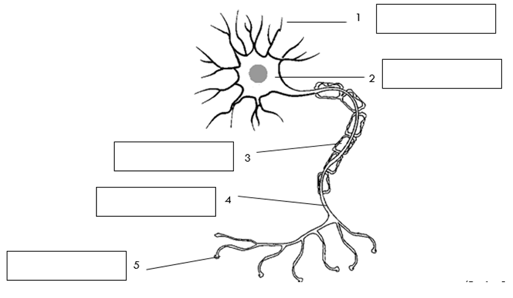
Label the neuron.
Label 1:
Label 2:
Label 3:
Label 4:
Label 5:
The electrical impulse travels from the to the .
Question 12
Bubble tea gets its name from the flavoured "boba" in the bottom of the drink. To make them, sugary tapioca pearls are boiled in water, which makes them swell up and become soft and chewy.
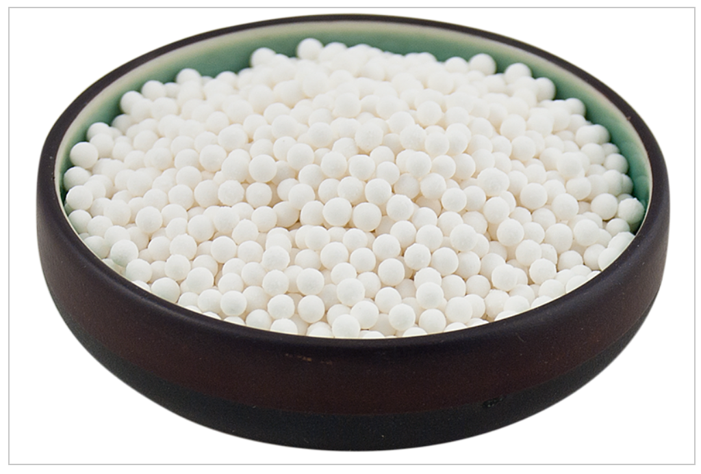
The tapioca pearls absorb water by osmosis. Define osmosis.
The passive movement of water molecules across a semi-permeable membrane, from an area of low solute concentration to an area of higher solute concentration.
Bubble tea shops sometimes store leftover boba overnight. Boba contain about 10% sugar. Explain what would happen if they were stored in (i) pure water at 20 °C; (ii) a 10% sugar solution at room temperature.
(i) They would keep expanding and break open, because water moves into the boba by osmosis (both parts needed) (1 mark).
(ii) A 10% sugar solution has the same concentration as inside the boba (isotonic), so there is no net movement of water and they keep their shape and texture (both parts needed) (1 mark).
Question 13
In humans, the level of water in the blood is controlled by homeostasis.
What is homeostasis?
The maintenance of the internal environment within narrow limits, despite changes in the internal or external environment.
Read the passage, then construct a flow diagram showing how the level of water in the blood is regulated.
Osmoreceptors in the hypothalamus respond to changes in the blood. When blood pressure is low (less water in the blood), the hypothalamus causes the pituitary gland to secrete antidiuretic hormone (ADH). ADH acts on the kidney, making it reabsorb more water, producing less, more concentrated urine. When blood pressure is too high (lots of water in the blood), the pituitary gland secretes less ADH, so the kidney reabsorbs less water and more dilute urine is produced.
Two loops from normal blood water level:
- High blood water → osmoreceptors in the hypothalamus detect the change → pituitary gland secretes less ADH → kidney reabsorbs less water (more dilute urine) → back to normal.
- Low blood water → osmoreceptors in the hypothalamus detect the change → pituitary gland secretes more ADH → kidney reabsorbs more water (less, concentrated urine) → back to normal.
Question 14
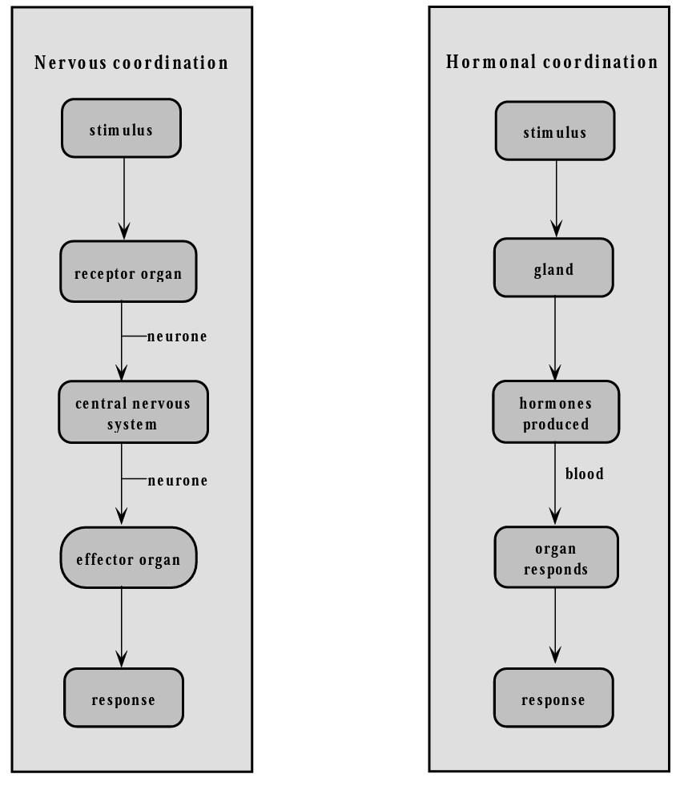
Give one way in which the two methods of coordination are similar.
Both are activated by a stimulus, and both bring about a response to the change.
Give one way in which the two methods of coordination are different.
Nervous coordination uses the CNS and nerves (electrical impulses along neurons); hormonal coordination uses the endocrine system (chemical hormones carried in the blood).